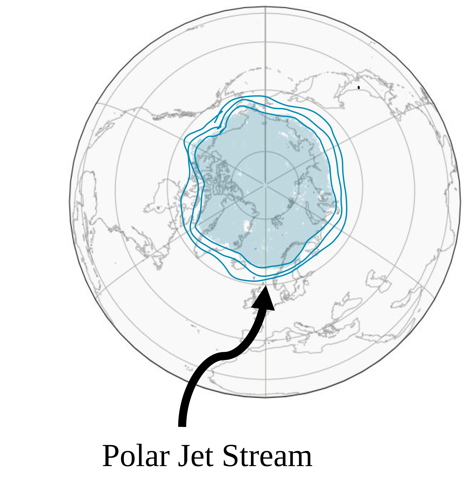
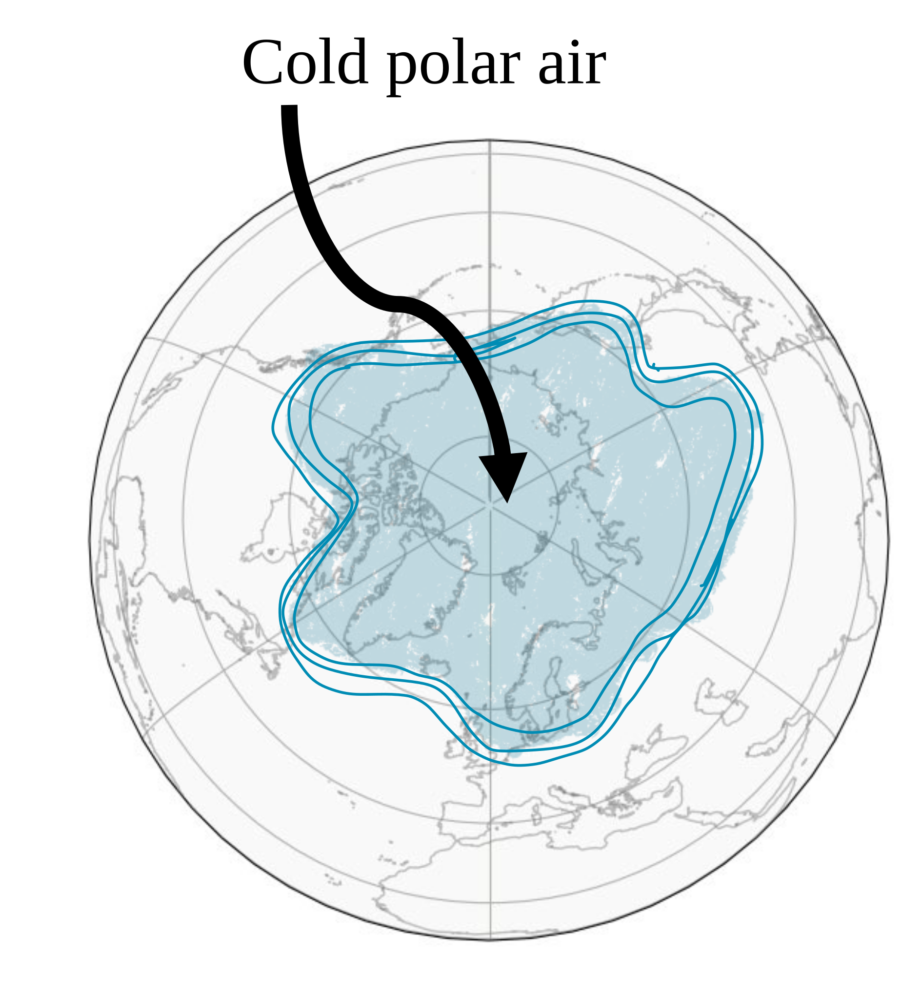
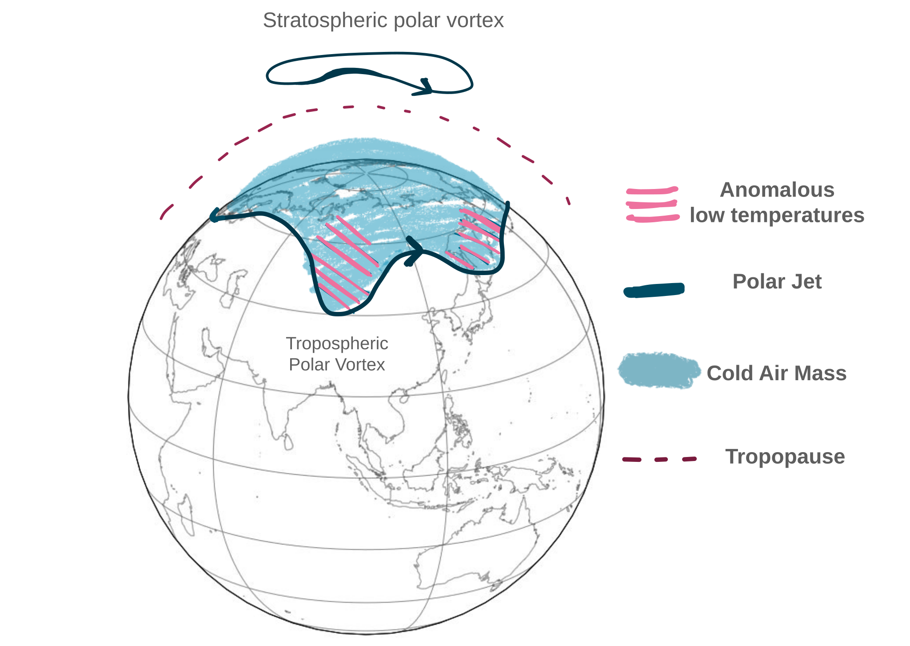
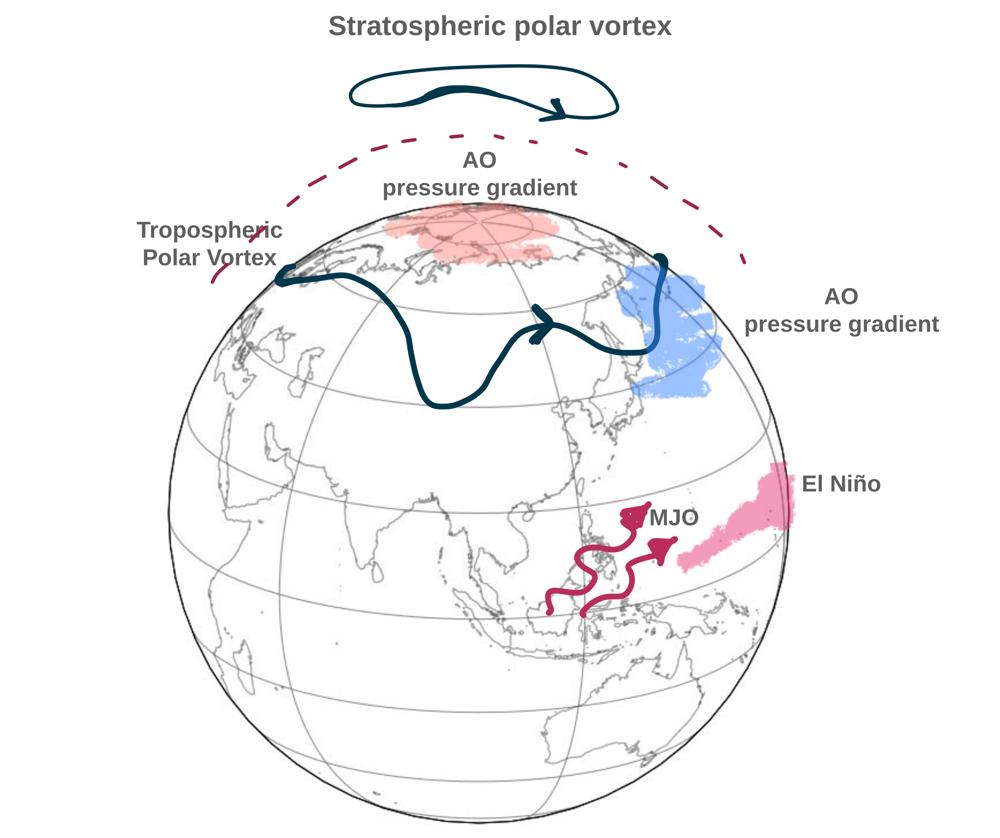

PhD Work
My PhD work considers cold spell events in the Northern Hemisphere. These extreme weather events occur when the temperature drops significantly below the expected average for extended periods of time. During cold spells days the temperature can drop below freezing, leading to icy severe conditions. The most recent and well known cold spell in the UK was named 'The Beast from the East', and cost the UK economy billions of pounds. As it swept through, the cold spell caused damage to the agriculture, lead to transport delays and exacerbated underlying health conditions.

The reason for these temperature drops is usually linked to the polar jet (see solid blue lines on the figure opposite), which describes the strong westerly winds in the upper troposphere. The polar jet can be thought of as a barrier, seperating the cold polar air (blue shading) from the warmer tropical air.

When the polar jet weakens (see opposite figure), cold air is transported out of the Arctic into lower latitude, through the 'tounges' of the polar jet.


The position of the polar jet is influenced by many atmospheric circulation anomalies and other modes of variabilities. Some of which are illustrated in the (hand-drawn) pictures on the left hand side. This includes for example the weakening of the stratospheric polar vortex.
My PhD involved developing a methodology that tracked these cold spells in space and time. Once I catalogued all these cold spells, I then investigated how these cold spells changed in a warming climate and the atmospheric circulation patterns and physical processes that lead to these events.
The paper describing this tracking methodology can be found here:
Read the paperThe Conversation article I wrote describing how cold spell events have changed due to climate change can be found here:
Read the articleAnd hopefully I will attach my final thesis at some stage here:
Final thesis